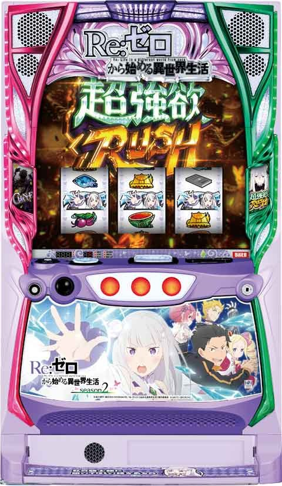
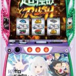
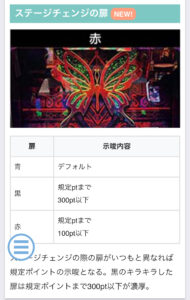
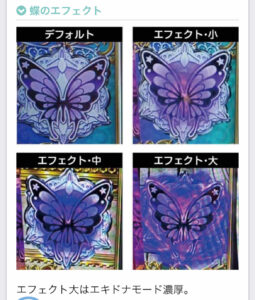

Lリゼロ season2


狙い目
【リセット狙い】
120ptから
【pt間天井&ゾーン狙い】
アイキャッチ黒、赤出現時はAT当選まで
①下位AT後
下位AT4連以上後は200ゾーン弱くなる傾向。4連以上後のゾーン狙いは190ptまたは200ptから。
200pt以下から天井狙いする場合、200ゾーン抜け直後は機械割が下がります。
ゾーン抜け後の雪合戦高確で雪合戦未当選時は一旦やめでも良さそう。(差枚+1700枚以上後はAT当選まで、雪合戦で300pt行ったならAT当選まで)
・差枚 +1700枚以上
AT間 0pt
・差枚 +1200枚から+1700枚
AT間 380pt
200ゾーン狙い 170pt
・差枚 -1000枚から+1200枚
前回実900Gハマり以上 4連以下 AT間 180pt
前回実900Gハマり以上 5連以上 AT間 390pt
それ以外 AT間 540pt
200ゾーン狙い 180pt
400ゾーン狙い 380pt
・差枚 -1000枚から-2000枚
前回実900Gハマり以上 4連以下 AT間 180pt
前回実900Gハマり以上 5連以上 AT間 380pt
それ以外 AT間 480pt
200ゾーン狙い 170pt
400ゾーン狙い 370pt
・差枚 -2000枚以下
前回実900Gハマり以上 4連以下 AT間 180pt
前回実900Gハマり以上 5連以上 AT間 380pt
それ以外 AT間 380pt
200ゾーン狙い 170pt
②上位AT後
差枚0から+1000枚の場合、200ゾーン抜け直後は機械割が下がります。
慎重派はゾーン抜け後の雪合戦高確で雪合戦未当選時は一旦やめでも良さそう。
積極派はAT当選まで。差枚+1700枚以上の場合は慎重派もAT当選まで。
・差枚 +1700枚以上
AT間 0pt
・差枚 +1000枚から+1700枚
AT間 160pt
・差枚 -1000枚から+1000枚
AT間 170pt
・差枚 -1000枚から-2000枚
AT間 160pt
・差枚 -2000枚以下
AT間 150pt
③駆け抜け後(差枚不問)
駆け抜け後は200ゾーンが強くなるため、ゾーン抜け直後は機械割がかなり下がります。
ゾーン抜け後の雪合戦高確で雪合戦未当選時は一旦やめでも良さそう。(900ハマり後で差枚-1500枚以下はAT当選まで続行、それ以外は雪合戦で300pt行ったならAT当選まで)
前回実900Gハマり以上 140pt
それ以外 300pt
200ゾーン 170pt
【エキドナモード狙い】
液晶左下の蝶アイコンで示唆
※狙い目はかなり暫定
※前回大ハマりしてる方が移行しやすい？
無し ボーダーそのまま
小 不明
中 100〜200ptボーダー下げる
大 AT当選まで
【有利区間について】
差枚が大幅プラスだと有利切れのチャンス。大幅マイナスだとAT性能が優遇される傾向。
やめ時
引き戻しとは筐体上部ロゴが紫に光ってるのが消えるまで。
基本1Gやめ。差枚や示唆で続行するケースあれば続行。
6連以上は引き戻し確認。
※7連以上で引き戻し率アップ。6連なら引き戻した場合に7連となるから6連以上は引き戻し確認。
上位AT後は引き戻し確認。
差枚+1800枚以上なら引き戻し確認。
その他
ステージチェンジの扉

エキドナモード示唆関連



参考元
基本情報
- メーカー: パオン・ディーピー
- 機械割: 97.6% 〜 114.9%
- 導入開始日: 2024年10月21日（月）
- ゲーム性概要: ●通常時は規定ポイントでATへ ●純増約9.0枚/Gの超強欲なAT機 ●超強欲チャレンジクリアで上位ATへ ●上位AT性能は超強力！


打ち方
打ち方・小役
打ち方（小役狙い）
［最初に狙う絵柄］

左リールの上段〜枠上に白7を目押し。左リールにスイカが止まった場合のみ中リールを目押し、その他の停止形は中＆右リールフリー打ちでOKだ。
［スイカ停止時のみ中リールを目押し］

［レア役の停止例］

変則押しはNG

押し順ナビ非発生時は左1stでの消化を推奨だ。
解析情報通常時
小役関連
レア役確率
| 役 | 確率 |
|---|---|
| スイカ | 1/80.0 |
| 弱チェリー | 1/100.1 |
| 強チェリー | 1/819.2 |
| チャンス目 | 1/256.0 |
内部状態関連
チキチキ雪合戦の高確

おもにスイカでチキチキ雪合戦の高確移行を抽選。内部状態は通常と高確の2種類で、高確中はおもにメモリースノーステージへ移行する。
高確 性能
| 項目 | 内容 |
|---|---|
| 移行契機 | 成立役に応じた抽選（メインはスイカ） |
| 滞在中の特徴 | レア役時のチキチキ雪合戦当選率アップ ※チャンス目・強チェリーは当選濃厚 |
モード
エキドナモード
AT初回継続時の報酬が超強欲チャレンジになるモードで、通常時のスイカで移行を抽選する。
エキドナモード性能
| 項目 | 内容 |
|---|---|
| 移行契機 | スイカ時の抽選 |
| 恩恵 | AT初回継続時の恩恵が必ず超強欲チャレンジになる |
| その他 | 蝶アイコンなど様々な示唆が存在 |
ポイント抽選
規定ポイント

1Gにつき1ptが貯まっていき、規定ポイントに到達するとATに当選。ポイント特化ゾーンの「チキチキ雪合戦」で一気にポイントを増やすことができる。 規定ポイントは基本的に100pt刻みで、200ptごとのゾーンはチャンスとなる。
規定ポイントの特徴
| 項目 | 内容 |
|---|---|
| 規定ポイント | 100Gごと |
| 200pt到達ごとのAT期待度 | 約25% |
| 最大天井 | 1400pt（設定変更後は1000pt） |
天井ポイントの短縮タイミング
| タイミング | 詳細 |
|---|---|
| 設定変更後 | 400・600・800・1000ptの いずれかに短縮 |
| AT駆け抜け後 | 約1/2で400・600・800・1000ptの いずれかに短縮 |
設定変更後はランダムでポイントが加算されるため、見た目上のゾーンがずれることがある。
規定ポイント選択率
通常時開始1G目に、どのポイントでATに当選するかを抽選。設定に応じて、100pt→200pt→300pt…と順番に抽選していき、当選したポイントが規定ポイントになる。百の位が奇数or偶数で当選率が異なり、基本的には百の位は偶数が選択される。 すべての抽選に漏れた場合の1400ptが最大天井だ。
チキチキ雪合戦
チキチキ雪合戦概要

5G/セットのポイント特化ゾーンで、毎ゲーム成立役に応じてポイントを獲得。3セット以上継続すれば約50%でATに当選するというCZ的な要素も秘めている。
チキチキ雪合戦 性能
| 項目 | 内容 |
|---|---|
| 当選契機 | レア役時の抽選（強チェリーは当選濃厚） |
| 継続ゲーム数 | 5G/セット |
| 消化中の抽選 | 毎ゲーム成立役に応じて10～300pt加算 |
| その他 | セット継続あり、 3セット以上継続時は約50%でAT直行 |
成立役ごとの上乗せポイント
| 役 | 上乗せポイント |
|---|---|
| その他 | 10pt以上 |
| ベル・リプレイ | 20pt以上 |
| 弱チェリー・スイカ | 50pt以上 |
| チャンス目 | 50pt以上かつ約50%で100pt以上 |
| 強チェリー | 100pt以上かつ約50%で200pt以上 |
［ポイント上乗せ］

［AT直行］

スバルを撃破すればAT当選だ。
フリーズ
ロングフリーズ


発生時はエピソードボーナス（300枚）＋超強欲ラッシュ（上位AT）濃厚だ。
解析情報ボーナス時
殲滅ラッシュ（AT）
AT概要

10G/セットの高純増ATで、終了後に移行する8Gの引き戻し状態（大兎殲滅戦）とループさせてロング継続を目指すゲーム性。 AT消化中は、レア役でセットストックが抽選される。 セット開始時にもセットストックが抽選されていて、当選時は歌が流れる。
殲滅ラッシュ（AT）性能
| 項目 | 内容 |
|---|---|
| 当選契機 | 通常時の規定ポイント、その他直行パターン |
| 継続ゲーム数 | 10G |
| 1Gあたりの純増 | 約9.0枚 |
| 消化中の抽選 | ATのセットストック抽選 ※チャンス目・強チェリーはストック濃厚 |
［色目押しをしながら消化］

大兎殲滅戦
大兎殲滅戦概要

3種類の告知モードを選択できる引き戻しゾーン。消化中はベル揃いやレア役で継続のチャンス、さらに突入時に決まっている殲滅役（対応したレア役）を引けば、継続濃厚かつ上位ATをかけた超強欲チャレンジ突入のチャンスとなる。 押し順ベルは色目押しの2択が表示されないため、択当ても重要だ。
大兎殲滅戦 性能
| 項目 | 内容 |
|---|---|
| 当選契機 | 殲滅ラッシュ（AT）消化後 |
| 継続ゲーム数 | 8G |
| 消化中の抽選 | ベル揃いやレア役でAT継続抽選、 殲滅役成立で継続以上濃厚 |
| その他 | 継続時の一部（殲滅役成立時）で 超強欲チャレンジや超強欲ラッシュも抽選 |
殲滅役のパターン別恩恵
| 殲滅役 | 恩恵 |
|---|---|
| スイカの場合 | スイカで継続＋超強欲チャレンジに期待 |
| チャンス目の場合 | チャンス目で継続＋超強欲チャレンジ濃厚 |
| チェリーの場合 | 弱チェリーで継続＋超強欲チャレンジに期待、 強チェリーで継続＋超強欲ラッシュ濃厚 |
| 殲滅役 | 2回成立で超強欲チャレンジ以上濃厚、 3回成立で超強欲ラッシュ濃厚 |
※非殲滅役でもチャンス目と強チェリーは継続以上濃厚 ※非殲滅役のスイカ・弱チェリーはAT中と同じ抽選値で継続を抽選
殲滅役がチャンス目の時にチャンス目を引けば超強欲チャレンジ濃厚、チェリーの時に強チェリーを引けば上位AT直行。スイカだった場合でも2回引けば超強欲チャレンジ以上濃厚になる。
告知パターンの特徴
| 告知パターン | 特徴 |
|---|---|
| ストーリー告知 | 演出でストックの獲得を示唆 |
| バトル告知 | 色目押し2択ナビ発生時に成功すると継続濃厚 |
| 完全告知 | セットストック獲得時に告知発生 |
［完全告知］

［ストーリー告知］

［バトル告知］

［殲滅役］

必ず1つ以上点灯。もちろん複数個点灯する場合もある。
ゼロからジャッジのレア役時抽選

報酬告知ゲームでのレア役は豪華報酬に期待できる。
ゼロからジャッジ時のレア役恩恵
| 役 | 恩恵 |
|---|---|
| 弱レア役 | セットストック濃厚 |
| チャンス目 | 超強欲チャレンジ濃厚 |
| 強チェリー | 超強欲チャレンジor超強欲ラッシュ濃厚 （比率は1：1） |
弱点役の個数振り分け
| 弱点役 | 1～2 セット目 | 3～6 セット目 | 7～9 セット目 | 10セット目 以降 |
|---|---|---|---|---|
| 1個 | 98.8% | 87.5% | 54.7% | － |
| 2個 | 1.2% | 12.1% | 34.4% | 54.7% |
| 3個 | － | 0.4% | 10.9% | 45.3% |
基本的に連チャンするほど弱点役が多くなりやすい。
ベルのセットストック当選確率
| 役 | 確率 |
|---|---|
| 押し順ベル | 1/10.6 （1/5.3で競り合い発生かつ2択成功でストック） |
| 共通ベル | 1/5.3 |
※継続ストックなし時の抽選値
救済機能抽選
| 状況 | 救済内容 |
|---|---|
| ラスト3Gまでに2択（競り合い）が 発生していない場合 （初回のみ有効） | 押し順ベル成立で 2択発展濃厚 |
| 押し順ナビで15枚ベルを 3回連続で獲得できなかった場合 | 次回の15枚獲得濃厚かつ 競り合い発生でストック濃厚 |
※継続ストックなし時の抽選値
死に戻り抽選
AT終了後32G＋α間はAT復帰のチャンスとなる。
超強欲チャレンジ
超強欲チャレンジ概要

5G間、全役で超強欲ラッシュ（上位AT）を抽選する特殊CZ。レア役を引けば上位AT濃厚だ。
超強欲チャレンジ 性能
| 項目 | 内容 |
|---|---|
| 当選契機 | 大兎殲滅戦成功時の一部 |
| 継続ゲーム数 | 5G |
| 成功期待度 | 約50% |
| 消化中の抽選 | 全役で上位ATを抽選、 レア役は上位AT濃厚 |
おねだりフレッシュ
おねだりフレッシュ概要

上位ATの初期差枚数決定ゾーン。毎ゲーム枚数が加算され、平均800枚とかなり強力だ。
おねだりフレッシュ 性能
| 項目 | 内容 |
|---|---|
| 突入契機 | 上位AT開始時 |
| 継続ゲーム数 | 5G＋α |
| 平均上乗せ | 約800枚 |
| 消化中の抽選 | 成立役に応じて上位ATの差枚数を上乗せ |
［多彩な上乗せパターン］

［おねだりフレッシュエクストラ］

エクストラなら上乗せ性能がアップする。
超強欲ラッシュ（上位AT）
上位AT概要

上位AT中は押し順ベルの種類で埋めるパネルや成立役に応じて差枚数上乗せや擬似ボーナスを抽選。 終了後は引き戻し期待度約50%の強欲ゾーンへ突入するため、ループに期待できる（引き戻し成功時は再度おねだりフレッシュからスタート）。
超強欲ラッシュ（上位AT）性能
| 項目 | 内容 |
|---|---|
| 突入契機 | 上位AT開始時 |
| 継続ゲーム数 | 差枚数消化まで |
| 1Gあたりの純増 | 約9.0枚 |
| 消化中の抽選 | パネルアタックや成立役に応じて 差枚数を上乗せ、擬似ボーナスなどを抽選、 |
| その他 | 終了後は必ず強欲ゾーンへ移行 |
チャンス目・強チェリーは上乗せ以上濃厚。
［パネルアタック］

画面左のパネル部分に注目。 押し順ベルをコンプすればパネルが解放されて恩恵ゲット。3枚ベル成立時は恩恵の昇格が抽選される。パネルの色は白＜青＜黄＜緑＜赤＜金の6種類で、緑から上乗せ以上濃厚になる。
［魔女フリーズ］

発生すれば上乗せ枚数が乗算される。発生で上乗せが2～10倍にアップ。差枚数上乗せの次ゲームにリプレイ成立で魔女フリーズ濃厚だ。 ※おねだりフレッシュ中やボーナス中、超強欲ラッシュ終了時の後乗せは例外
［強欲モード］

スイカで突入するモードで、滞在中に差枚数上乗せすれば魔女フリーズが発生！
［擬似ボーナス］


枚数は200or500枚。強欲ボーナスとエピソードボーナスの2系統で、後者なら500枚濃厚だ。
強欲ゾーン
強欲ゾーン概要

上位AT終了後に移行する引き戻しゾーン。平均期待度は約50%、5G間、全役で上位ATが抽選される。
強欲ゾーン性能
| 項目 | 内容 |
|---|---|
| 突入契機 | 上位AT終了後 |
| 継続ゲーム数 | 5G＋α |
| 成功期待度 | 約50% |
| 消化中の抽選 | 成立役に応じて上位AT引き戻しを抽選、 レア役は引き戻し濃厚 |
| その他 | 成功後はおねだりフレッシュ経由で上位ATへ |
演出情報
通常時
通常ステージの示唆
| ステージ | 示唆 |
|---|---|
| 通常ステージ | デフォルト |
| メモリースノーステージ | チキチキ雪合戦の高確示唆 |
| 聖域（夜） | 本前兆濃厚 |
| 夢の城 | 本前兆期待度約60% |
［通常ステージ］

［メモリースノーステージ］

［聖域（夜）］

［夢の城］

エキドナモードの示唆
| パターン | 示唆 |
|---|---|
| 上段ベル（3枚）入賞時 | バックライトの特殊フラッシュ発生で エキドナモードのチャンス |
| リプレイ入賞時 | バックライトの特殊フラッシュ発生で エキドナモード濃厚 |
| セリフ演出 | パンドラ出現でエキドナモード濃厚 |
| リール左側の蝶ランプ | 3段階目到達でエキドナモード濃厚 |
［セリフ演出：パンドラ］

［蝶の3段階目］

規定ポイント示唆
| 演出 | 示唆 |
|---|---|
| ステージチェンジ | ● 黒扉…規定ポイントまで 300pt以下 濃厚 ● 赤扉…規定ポイントまで 100pt以下 濃厚 |
［黒扉］

［赤扉］

前兆
蝶ステップアップ演出
蝶ステップアップ演出が発生すれば前兆開始の合図。ステップは1〜3段階が存在する。
［ステップ1］

［ステップ2］

［ステップ3］

エピソード

AT前兆のメインステージで、滞在中は画面左右の帯色が変化するほど期待度がアップ（青＜黄＜緑＜赤＜虹）。ラストの連続演出でAT当選の有無が告知される。
［エピソード］演出法則
| パターン | 法則 |
|---|---|
| 開始時の楽曲変化 | ● Memento：本前兆濃厚 ● Redo：超強欲ラッシュ濃厚 |
| ステージエフェクト | ● 青＜黄＜緑＜赤＜虹の順で本前兆期待度アップ ● 虹は本前兆濃厚 |
［青］

［黄］

［緑］

［赤］

［虹］

［ラストの連続演出］

殲滅ラッシュ（AT）
AT中ステージの示唆
| ステージ | 示唆 |
|---|---|
| 林道ステージ | デフォルト |
| 夜空ステージ | セットストックがあるかも!? |
| 月夜ステージ | セットストックあり濃厚 |
AT中はステージでセットストックの有無が示唆される。
［林道ステージ］

［夜空ステージ］

［月夜ステージ］

［殲滅ラッシュ］演出法則
| パターン | 法則 |
|---|---|
| 抗えカットイン | ● 青：デフォルト ● 緑：セットストック期待度約50% ● 赤：セットストック濃厚 |
| ×？？ナビ | ● 5セット継続（5戦目突入）ごとに発生 ● 択当てに正解（15枚獲得）すれば約50%でセットストックor超強欲ラッシュ獲得 |
| 大兎殲滅戦の ストーリー告知時 | ● カスタムキャラのカットイン発生で超強欲チャレンジ以上濃厚 ● プレミアカットインなら超強欲ラッシュ濃厚 |
［抗えカットイン：赤］

セット開始時の扉絵
各セット開始時の扉絵のパターンでセットストックの有無や個数、超強欲チャレンジ突入を示唆するパターンが存在。 奇数セットはメイド服・偶数セットはメイド服以外がデフォルトで、その他のパターンは継続以上のチャンス。 レムは（メイド服）は出現した時点で継続以上濃厚、スバルは継続濃厚だ。
扉絵の示唆
| 扉絵 | 奇数セット | 偶数セット | |
|---|---|---|---|
| 青 | ラム （メイド服） | 基本 | 継続濃厚 |
| 青 | ペトラ （メイド服） | 基本 | 継続濃厚 |
| 青 | フレデリカ （メイド服） | チャンスアップ | 超強欲チャレンジor ストック2個以上 |
| 青 | レム （メイド服） | 継続濃厚 | 超強欲チャレンジor ストック3個以上 |
| 青 | エミリア | 継続濃厚 | 基本 |
| 青 | ベアトリス | 継続濃厚 | 基本 |
| 青 | ガーフィール | 超強欲チャレンジor ストック2個以上 | チャンスアップ |
| 青 | 大兎 | 超強欲チャレンジor ストック3個以上 | 継続濃厚 |
| 緑 | ラム （メイド服） | 基本 | 継続濃厚 |
| 緑 | ペトラ （メイド服） | 基本 | 継続濃厚 |
| 緑 | フレデリカ （メイド服） | チャンスアップ | 超強欲チャレンジor ストック2個以上 |
| 緑 | レム （メイド服） | 継続濃厚 | 超強欲チャレンジ |
| 緑 | エミリア | 継続濃厚 | 基本 |
| 緑 | ベアトリス | 超強欲チャレンジor ストック2個以上 | 基本 |
| 緑 | エキドナ | 超強欲チャレンジ | チャンスアップ |
| 赤 | スバル | 継続濃厚 | 継続濃厚 |
［扉絵：青］

［扉絵：緑］

［扉絵：赤］

大兎殲滅戦
特殊バックライト

小役成立時に特殊なバックライト発生で、当該ゲームでのセットストック獲得期待度約50%（7or8G目に発生した場合はストック濃厚）。
超強欲チャレンジ
超強欲チャレンジ中の演出法則
| 演出 | 法則 |
|---|---|
| リールロック | ● 2段階目到達で成功期待度約50% |
［リールロック］

おねだりフレッシュ
［おねだりフレッシュ］演出法則
| パターン | 法則 |
|---|---|
| エキドナアタック | ● BARor7揃い時に発生 ● 上乗せ枚数は222～1111枚 ● BAR揃い契機は222枚以上 ● 7揃い契機は555枚以上 |
| 強欲上乗せ | ● 5・4・9図柄の組み合わせ停止で発生 ● ゾロ目と549枚上乗せ時は次ゲームも強欲上乗せ |
| ゼロから乗せ | ● 上乗せ枚数に0が追加されて一桁アップする |
［エキドナアタック］

3桁上乗せがループする超強力パターンだ。
［強欲乗せ］

549（強欲）の組み合わせ停止で上乗せ！
［ゼロから乗せ］

超強欲ラッシュ（上位AT）
［超強欲ラッシュ］演出法則
| パターン | 法則 | |
|---|---|---|
| 演出非発生 | リプレイ濃厚 | |
| 共通ベルの回数 | 1～5回でパネルレベルアップ | |
| 魔女 フリーズ | テュフォン（傲慢） | 3倍以上 |
| 魔女 フリーズ | ダフネ（暴食） | 5倍以上 |
| 魔女 フリーズ | セクメト（怠惰） | 7倍以上 |
［魔女フリーズ］

登場する魔女に注目！ ※画像はミネルヴァ（憤怒）
その他
ダイトモのカスタム


ダイトモでは様々なカスタムが可能。ミッション達成や特定日に様々なカスタムが解放される。
万枚を達成した日はカレンダーにハートマークが表示される。